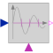

ZeroCrossingTrigger zero crossing of input u |

|
Information
This information is part of the Modelica Standard Library maintained by the Modelica Association.
The output "y" is true at the time instant when the input "u" becomes zero, provided the input "enable" is true. At all other time instants, the output "y" is false. If the input "u" is zero at a time instant when the "enable" input changes its value, then the output y is false.
Note, that in the plot window of a Modelica simulator, the output of this block is usually identically to false, because the output may only be true at an event instant, but not during continuous integration. In order to check that this component is actually working as expected, one should connect its output to, e.g., component Modelica.Blocks.Discrete.TriggeredSampler.
Connectors (3)
| y |
Type: BooleanOutput Description: Connector of Boolean output signal |
|
|---|---|---|
| u |
Type: RealInput |
|
| enable |
Type: BooleanInput Description: Zero input crossing is triggered if the enable input signal is true |